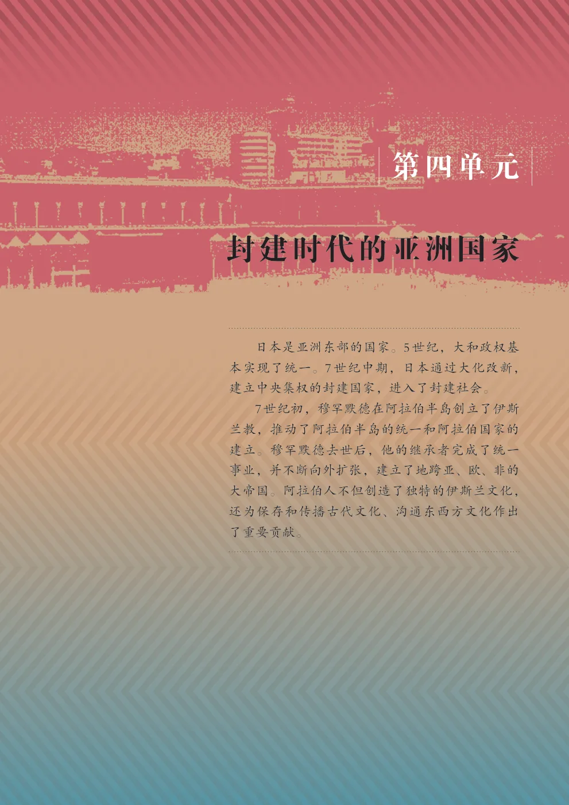
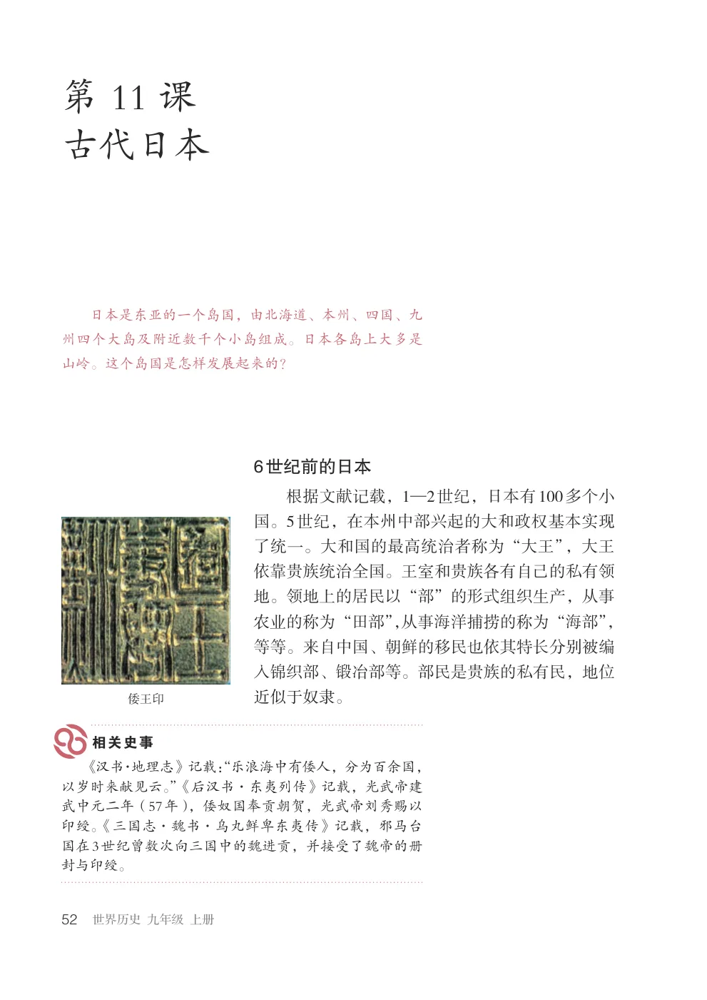
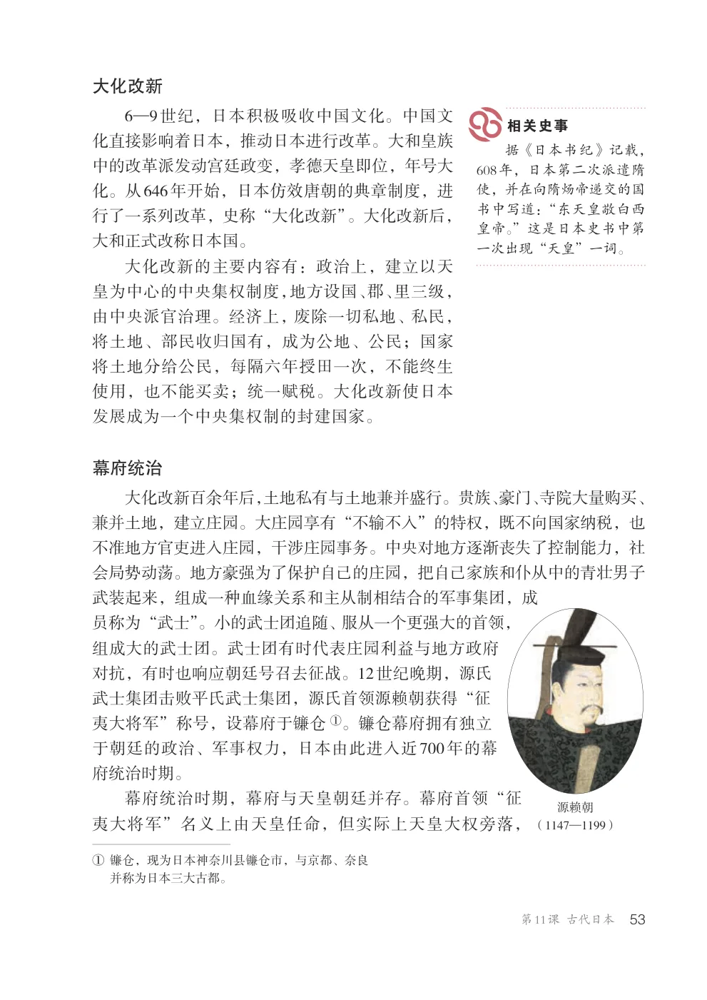
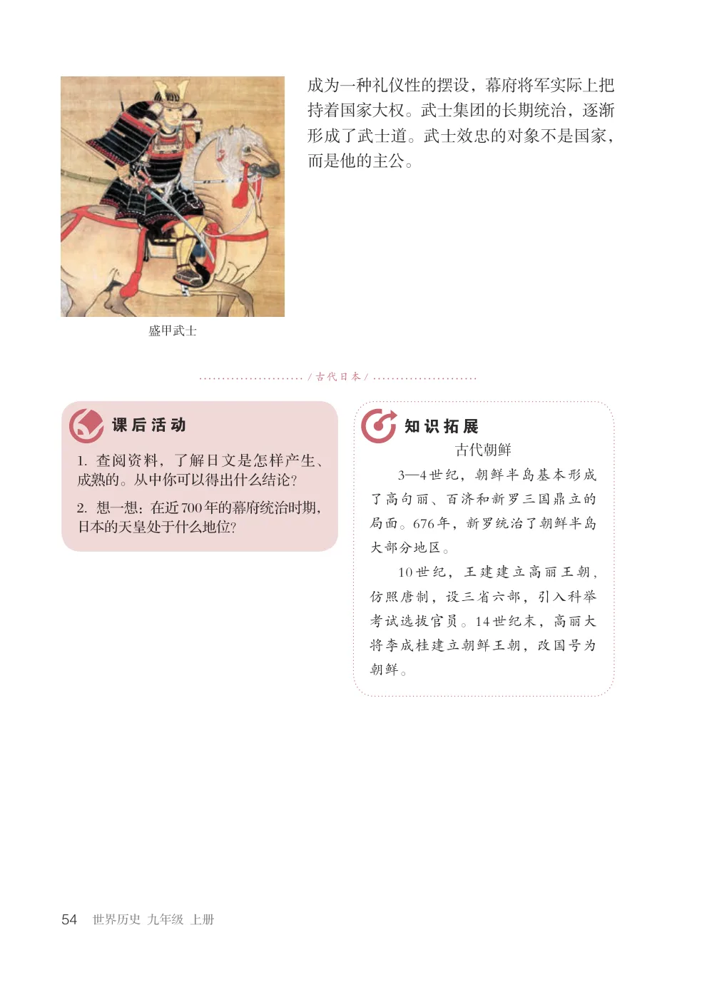
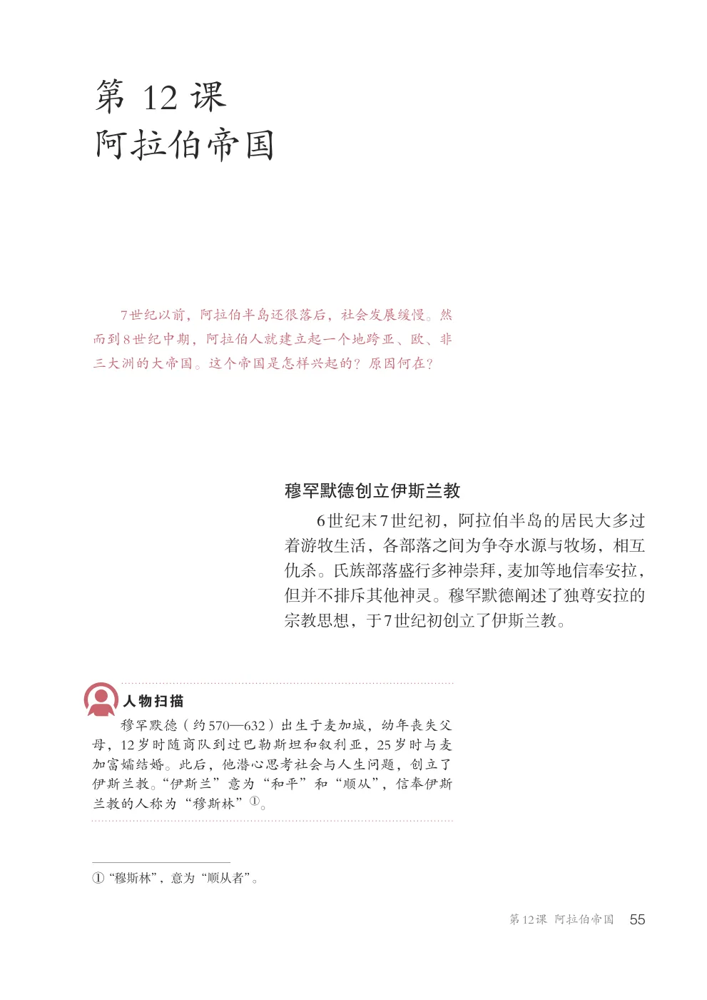
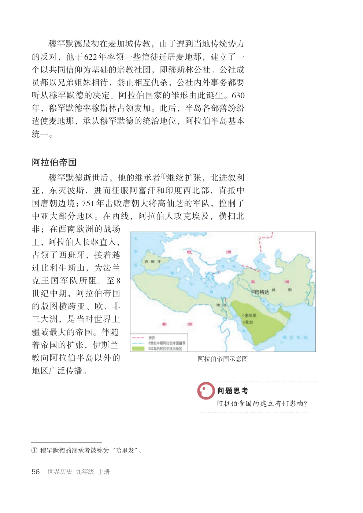
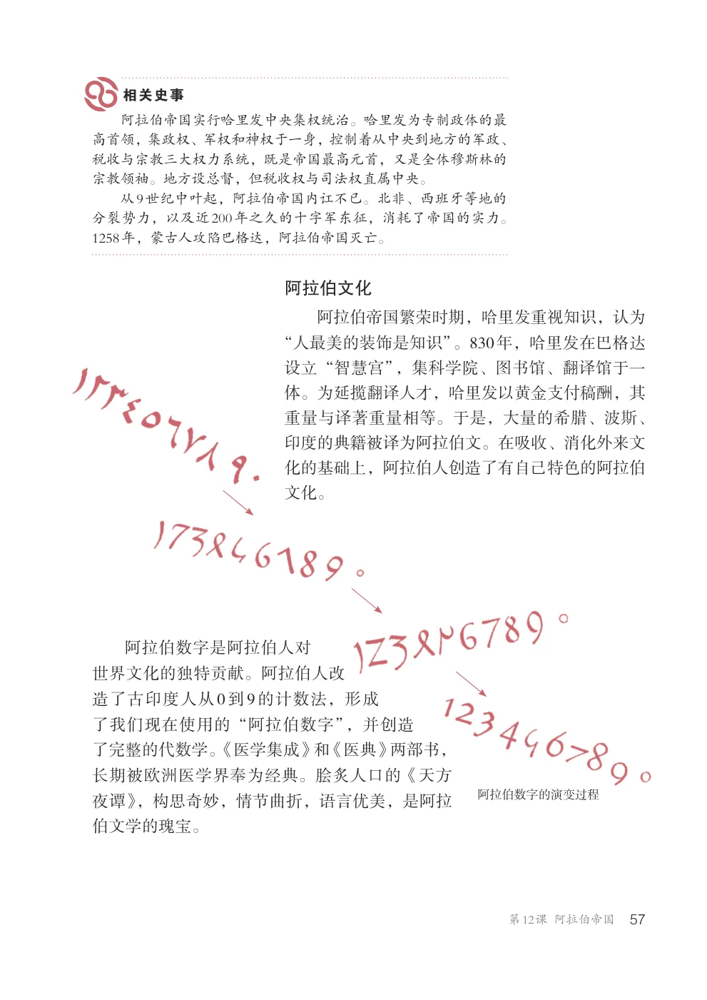
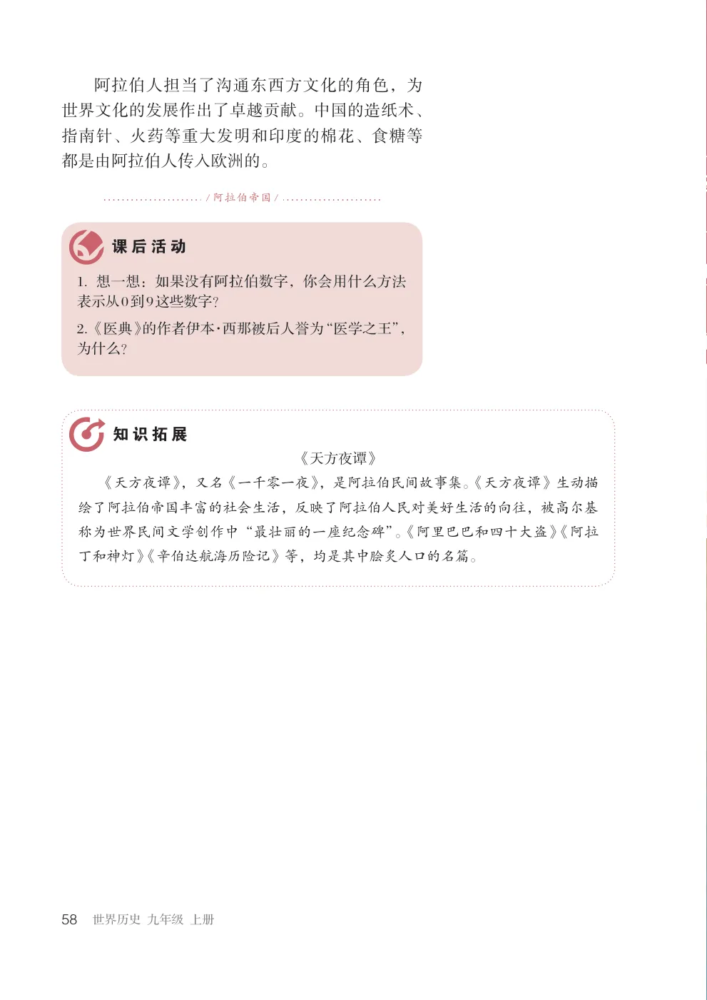

教材第 51 页
查看原书页面日本是亚洲东部的国家。5世纪，大和政权基本实现了统一。7世纪中期，日本通过大化改新，建立中央集权的封建国家，进入了封建社会。 7世纪初，穆罕默德在阿拉伯半岛创立了伊斯兰教，推动了阿拉伯半岛的统一和阿拉伯国家的建立。穆罕默德去世后，他的继承者完成了统一事业，并不断向外扩张，建立了地跨亚、欧、非的大帝国。阿拉伯人不但创造了独特的伊斯兰文化，还为保存和传播古代文化、沟通东西方文化作出了重要贡献。
UNIT 04
本单元包含 2 课，正文与课后活动按教材原顺序编排，并保留对应全部原书页面。
单元导语
日本是亚洲东部的国家。5世纪，大和政权基本实现了统一。7世纪中期，日本通过大化改新，建立中央集权的封建国家，进入了封建社会。 7世纪初，穆罕默德在阿拉伯半岛创立了伊斯兰教，推动了阿拉伯半岛的统一和阿拉伯国家的建立。穆罕默德去世后，他的继承者完成了统一事业，并不断向外扩张，建立了地跨亚、欧、非的大帝国。阿拉伯人不但创造了独特的伊斯兰文化，还为保存和传播古代文化、沟通东西方文化作出了重要贡献。
第 11 课
日本是东亚的一个岛国，由北海道、本州、四国、九州四个大岛及附近数千个小岛组成。日本各岛上大多是山岭。这个岛国是怎样发展起来的？
根据文献记载，1—2世纪，日本有100多个小国。5世纪，在本州中部兴起的大和政权基本实现了统一。大和国的最高统治者称为“大王”，大王依靠贵族统治全国。王室和贵族各有自己的私有领地。领地上的居民以“部”的形式组织生产，从事农业的称为“田部”，从事海洋捕捞的称为“海部”，等等。来自中国、朝鲜的移民也依其特长分别被编入锦织部、锻冶部等。部民是贵族的私有民，地位
倭王印
近似于奴隶。
《汉书·地理志》记载：“乐浪海中有倭人，分为百余国，以岁时来献见云。”《后汉书·东夷列传》记载，光武帝建武中元二年（57年），倭奴国奉贡朝贺，光武帝刘秀赐以印绶。《三国志·魏书·乌丸鲜卑东夷传》记载，邪马台国在3世纪曾数次向三国中的魏进贡，并接受了魏帝的册封与印绶。
6—9世纪，日本积极吸收中国文化。中国文
化直接影响着日本，推动日本进行改革。大和皇族中的改革派发动宫廷政变，孝德天皇即位，年号大化。从646年开始，日本仿效唐朝的典章制度，进行了一系列改革，史称“大化改新”。大化改新后，大和正式改称日本国。
据《日本书纪》记载， 608年，日本第二次派遣隋使，并在向隋炀帝递交的国书中写道：“东天皇敬白西皇帝。”这是日本史书中第一次出现“天皇”一词。
大化改新的主要内容有：政治上，建立以天皇为中心的中央集权制度，地方设国、郡、里三级，由中央派官治理。经济上，废除一切私地、私民，将土地、部民收归国有，成为公地、公民；国家将土地分给公民，每隔六年授田一次，不能终生使用，也不能买卖；统一赋税。大化改新使日本发展成为一个中央集权制的封建国家。
大化改新百余年后，土地私有与土地兼并盛行。贵族、豪门、寺院大量购买、兼并土地，建立庄园。大庄园享有“不输不入”的特权，既不向国家纳税，也不准地方官吏进入庄园，干涉庄园事务。中央对地方逐渐丧失了控制能力，社会局势动荡。地方豪强为了保护自己的庄园，把自己家族和仆从中的青壮男子武装起来，组成一种血缘关系和主从制相结合的军事集团，成员称为“武士”。小的武士团追随、服从一个更强大的首领，组成大的武士团。武士团有时代表庄园利益与地方政府对抗，有时也响应朝廷号召去征战。12世纪晚期，源氏武士集团击败平氏武士集团，源氏首领源赖朝获得“征夷大将军”称号，设幕府于镰仓①。镰仓幕府拥有独立于朝廷的政治、军事权力，日本由此进入近700年的幕府统治时期。幕府统治时期，幕府与天皇朝廷并存。幕府首领“征
源赖朝（1147—1199）
夷大将军”名义上由天皇任命，但实际上天皇大权旁落，
①镰仓，现为日本神奈川县镰仓市，与京都、奈良并称为日本三大古都。
成为一种礼仪性的摆设，幕府将军实际上把持着国家大权。武士集团的长期统治，逐渐形成了武士道。武士效忠的对象不是国家，而是他的主公。
盛甲武士
古代朝鲜
3—4世纪，朝鲜半岛基本形成
1. 查阅资料，了解日文是怎样产生、成熟的。从中你可以得出什么结论？
了高句丽、百济和新罗三国鼎立的局面。676年，新罗统治了朝鲜半岛
2. 想一想：在近700年的幕府统治时期，日本的天皇处于什么地位？
大部分地区。
10世纪，王建建立高丽王朝, 仿照唐制，设三省六部，引入科举考试选拔官员。14世纪末，高丽大将李成桂建立朝鲜王朝，改国号为朝鲜。
第 12 课
7世纪以前，阿拉伯半岛还很落后，社会发展缓慢。然而到8世纪中期，阿拉伯人就建立起一个地跨亚、欧、非三大洲的大帝国。这个帝国是怎样兴起的？原因何在？
6世纪末7世纪初，阿拉伯半岛的居民大多过着游牧生活，各部落之间为争夺水源与牧场，相互仇杀。氏族部落盛行多神崇拜，麦加等地信奉安拉，但并不排斥其他神灵。穆罕默德阐述了独尊安拉的宗教思想，于7世纪初创立了伊斯兰教。
穆罕默德（约570—632）出生于麦加城，幼年丧失父母，12岁时随商队到过巴勒斯坦和叙利亚，25岁时与麦加富孀结婚。此后，他潜心思考社会与人生问题，创立了伊斯兰教。“伊斯兰”意为“和平”和“顺从”，信奉伊斯兰教的人称为“穆斯林”①。
①“穆斯林”，意为“顺从者”。
穆罕默德最初在麦加城传教，由于遭到当地传统势力的反对，他于622年率领一些信徒迁居麦地那，建立了一个以共同信仰为基础的宗教社团，即穆斯林公社。公社成员都以兄弟姐妹相待，禁止相互仇杀，公社内外事务都要听从穆罕默德的决定。阿拉伯国家的雏形由此诞生。630年，穆罕默德率穆斯林占领麦加。此后，半岛各部落纷纷遣使麦地那，承认穆罕默德的统治地位，阿拉伯半岛基本统一。
穆罕默德逝世后，他的继承者①继续扩张，北进叙利亚，东灭波斯，进而征服阿富汗和印度西北部，直抵中国唐朝边境；751年击败唐朝大将高仙芝的军队，控制了中亚大部分地区。在西线，阿拉伯人攻克埃及，横扫北非；在西南欧洲的战场上，阿拉伯人长驱直入，占领了西班牙，接着越过比利牛斯山，为法兰克王国军队所阻。至8世纪中期，阿拉伯帝国的版图横跨亚、欧、非三大洲，是当时世界上疆域最大的帝国。伴随着帝国的扩张，伊斯兰
阿拉伯帝国示意图
教向阿拉伯半岛以外的地区广泛传播。
阿拉伯帝国的建立有何影响？
①穆罕默德的继承者被称为“哈里发”。
阿拉伯帝国实行哈里发中央集权统治。哈里发为专制政体的最高首领，集政权、军权和神权于一身，控制着从中央到地方的军政、税收与宗教三大权力系统，既是帝国最高元首，又是全体穆斯林的宗教领袖。地方设总督，但税收权与司法权直属中央。从9世纪中叶起，阿拉伯帝国内讧不已。北非、西班牙等地的分裂势力，以及近200年之久的十字军东征，消耗了帝国的实力。 1258年，蒙古人攻陷巴格达，阿拉伯帝国灭亡。
阿拉伯帝国繁荣时期，哈里发重视知识，认为“人最美的装饰是知识”。830年，哈里发在巴格达设立“智慧宫”，集科学院、图书馆、翻译馆于一体。为延揽翻译人才，哈里发以黄金支付稿酬，其重量与译著重量相等。于是，大量的希腊、波斯、印度的典籍被译为阿拉伯文。在吸收、消化外来文化的基础上，阿拉伯人创造了有自己特色的阿拉伯文化。
阿拉伯数字是阿拉伯人对世界文化的独特贡献。阿拉伯人改造了古印度人从0到9的计数法，形成了我们现在使用的“阿拉伯数字”，并创造了完整的代数学。《医学集成》和《医典》两部书，长期被欧洲医学界奉为经典。脍炙人口的《天方
阿拉伯数字的演变过程
夜谭》，构思奇妙，情节曲折，语言优美，是阿拉伯文学的瑰宝。
阿拉伯人担当了沟通东西方文化的角色，为世界文化的发展作出了卓越贡献。中国的造纸术、指南针、火药等重大发明和印度的棉花、食糖等都是由阿拉伯人传入欧洲的。
1. 想一想：如果没有阿拉伯数字，你会用什么方法表示从0到9这些数字？ 2. 《医典》的作者伊本·西那被后人誉为“医学之王”，为什么？
《天方夜谭》
《天方夜谭》，又名《一千零一夜》，是阿拉伯民间故事集。《天方夜谭》生动描绘了阿拉伯帝国丰富的社会生活，反映了阿拉伯人民对美好生活的向往，被高尔基称为世界民间文学创作中“最壮丽的一座纪念碑”。《阿里巴巴和四十大盗》《阿拉丁和神灯》《辛伯达航海历险记》等，均是其中脍炙人口的名篇。
SOURCE PAGES
按单元导语和课次分组展示。本区域保留本单元全部教材页面、插图、地图、照片和版面信息。







